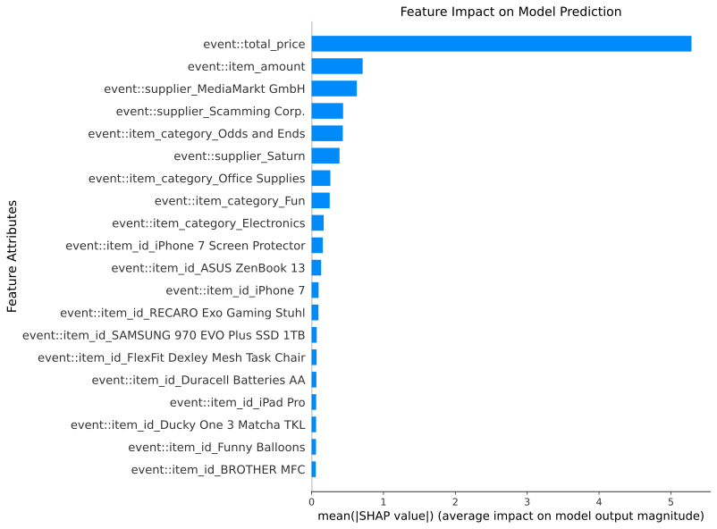

exdpn.guards.logistic_regression_guard
This module contains the functionality to create different machine learning guards to model the behavior at decision points as well as an guard manager to automatically handle the guard training and selection for each decision point.
Guard
A guard is in this case a machine learning model which aims to model the behavior on a decision point. The goal is to receive a classification model which predicts the transition following a certain decision point using the data contained in the given event log. To get a better understanding on how the model works and provide a better understanding all machine learning techniques return an explainable representation of the fitted model.
1""" 2.. include:: ./../../docs/_templates/md/guards/guard.md 3 4""" 5 6import io 7from exdpn.data_preprocessing.data_preprocessing import apply_ohe, apply_scaling, fit_scaling 8from exdpn.guards import Guard 9from exdpn.data_preprocessing import fit_ohe 10 11from sklearn.linear_model import LogisticRegression 12from pandas import DataFrame 13from pm4py.objects.petri_net.obj import PetriNet 14from typing import Dict, List, Any, Optional, Union 15import shap 16from matplotlib.figure import Figure 17import matplotlib.pyplot as plt 18import numpy as np 19 20 21class Logistic_Regression_Guard(Guard): 22 def __init__(self, hyperparameters: Dict[str, Any] = {'C': 0.1375, 'tol': 0.001}, random_state:int = None) -> None: 23 """Initializes a logistic regression based guard with the provided hyperparameters. 24 25 Args: 26 hyperparameters (Dict[str, Any]): Hyperparameters used for the classifier. 27 random_state (int, optional): The random state to be used for algorithms wherever possible. Defaults to None. 28 29 Raises: 30 TypeError: If supplied hyperparameters are invalid. 31 32 Examples: 33 34 >>> from exdpn.guards import Logistic_Regression_Guard 35 >>> guard = Logistic_Regression_Guard() 36 37 .. include:: ../../docs/_templates/md/example-end.md 38 """ 39 super().__init__(hyperparameters, random_state) 40 # possible hyperparameter: C (regularization parameter) 41 try: 42 self.model = LogisticRegression(**hyperparameters, random_state=random_state) 43 except TypeError: 44 raise TypeError( 45 "Wrong hyperparameters were supplied to the logistic regression guard") 46 47 self.transition_int_map = None 48 self.feature_names = None 49 self.ohe = None 50 self.scaler = None 51 self.scaler_columns = None 52 self.random_state = random_state 53 54 def train(self, X: DataFrame, y: DataFrame) -> None: 55 """Trains the logistic regression guard using the dataset and the specified hyperparameters. 56 Args: 57 X (DataFrame): Feature variables of the provided dataset, used to train the classifier behind the guard. 58 y (DataFrame): Target variable of the provided dataset, is to be predicted using `X`. 59 60 Examples: 61 62 >>> from exdpn.util import import_log 63 >>> from exdpn.petri_net import get_petri_net 64 >>> from exdpn.guard_datasets import extract_all_datasets 65 >>> from exdpn.guards import Logistic_Regression_Guard 66 >>> from exdpn.data_preprocessing import data_preprocessing_evaluation 67 >>> event_log = import_log('./datasets/p2p_base.xes') 68 >>> pn, im, fm = get_petri_net(event_log) 69 >>> dp_dataset_map = extract_all_datasets(event_log, pn, im, fm, 70 ... event_level_attributes = ['item_category','item_id','item_amount','supplier','total_price'], 71 ... activityName_key = "concept:name") 72 >>> # select a certrain decision point and the corresponding data set 73 >>> dp = list(dp_dataset_map.keys())[0] 74 >>> dp_dataset = dp_dataset_map[dp] 75 >>> X_train, X_test, y_train, y_test = data_preprocessing_evaluation(dp_dataset) 76 >>> guard = Logistic_Regression_Guard() 77 >>> guard.train(X_train, y_train) 78 79 .. include:: ../../docs/_templates/md/example-end.md 80 81 """ 82 # scale numerical attributes 83 self.scaler, self.scaler_columns = fit_scaling(X) 84 X = apply_scaling(X, self.scaler, self.scaler_columns) 85 # one hot encoding for categorical data 86 self.ohe = fit_ohe(X) 87 X = apply_ohe(X, self.ohe) 88 self.X_train = X 89 90 # store feature names for the explainable representation 91 self.feature_names = list(X.columns) 92 93 # make transition to integer (i.e. ID) map 94 self.transition_int_map = { 95 transition: index for index, transition in enumerate(list(set(y)))} 96 y_transformed = [self.transition_int_map[transition] 97 for transition in y] 98 99 self.model = self.model.fit(X, y_transformed) 100 101 def predict(self, input_instances: DataFrame) -> List[PetriNet.Transition]: 102 """Predicts the next transition based on the input instances. 103 104 Args: 105 input_instances (DataFrame): Dataset of input instances used to predict the target variable, i.e., the next transition. 106 107 Returns: 108 List[PetriNet.Transition]: The list of predicted transitions. 109 110 Examples: 111 112 >>> from exdpn.util import import_log 113 >>> from exdpn.petri_net import get_petri_net 114 >>> from exdpn.guard_datasets import extract_all_datasets 115 >>> from exdpn.guards import Logistic_Regression_Guard 116 >>> from exdpn.data_preprocessing import data_preprocessing_evaluation 117 >>> event_log = import_log('./datasets/p2p_base.xes') 118 >>> pn, im, fm = get_petri_net(event_log) 119 >>> dp_dataset_map = extract_all_datasets(event_log, pn, im, fm, 120 ... event_level_attributes = ['item_category','item_id','item_amount','supplier','total_price'], 121 ... activityName_key = "concept:name") 122 >>> # select a certrain decision point and the corresponding data set 123 >>> dp = list(dp_dataset_map.keys())[0] 124 >>> dp_dataset = dp_dataset_map[dp] 125 >>> X_train, X_test, y_train, y_test = data_preprocessing_evaluation(dp_dataset) 126 >>> guard = Logistic_Regression_Guard() 127 >>> guard.train(X_train, y_train) 128 >>> y_prediction = guard.predict(X_test) 129 130 .. include:: ../../docs/_templates/md/example-end.md 131 132 """ 133 # scale numerical attributes 134 input_instances = apply_scaling( 135 input_instances, self.scaler, self.scaler_columns) 136 # one hot encoding for categorical data 137 input_instances = apply_ohe(input_instances, self.ohe) 138 139 predicted_transition_ids = self.model.predict(input_instances) 140 # ty stackoverflow 141 # finds the key (transition) where the value (transition integer / id) corresponds to the predicted integer / id 142 # for all predicted integers 143 return [next(trans for trans, trans_id in self.transition_int_map.items() if trans_id == pred_id) for pred_id in predicted_transition_ids] 144 145 def is_explainable(self) -> bool: 146 """Returns whether or not this guard is explainable. 147 148 Returns: 149 bool: Whether or not the guard is explainable. 150 151 Examples: 152 153 >>> from exdpn.guards import Logistic_Regression_Guard 154 >>> guard = Logistic_Regression_Guard() 155 >>> guard.is_explainable() 156 True 157 158 .. include:: ../../docs/_templates/md/example-end.md 159 160 """ 161 return True 162 163 def get_explainable_representation(self, data:Optional[DataFrame]) -> Figure: 164 """Returns an explainable representation of the logistic regression guard, a Matplotlib plot using SHAP. 165 Args: 166 data (DataFrame): Dataset of input instances used to construct an explainable representation. 167 168 Returns: 169 Figure: Matplotlib Figure of the trained logistic regression model. 170 171 Raises: 172 Exception: If guard has no explainable representation. 173 174 Examples: 175 176 >>> from exdpn.util import import_log 177 >>> from exdpn.petri_net import get_petri_net 178 >>> from exdpn.guard_datasets import extract_all_datasets 179 >>> from exdpn.guards import Logistic_Regression_Guard 180 >>> from exdpn.data_preprocessing import data_preprocessing_evaluation 181 >>> event_log = import_log('./datasets/p2p_base.xes') 182 >>> pn, im, fm = get_petri_net(event_log) 183 >>> dp_dataset_map = extract_all_datasets(event_log, pn, im, fm, 184 ... event_level_attributes = ['item_category','item_id','item_amount','supplier','total_price'], 185 ... activityName_key = "concept:name") 186 >>> # select a certain decision point and the corresponding data set 187 >>> dp = list(dp_dataset_map.keys())[0] 188 >>> dp_dataset = dp_dataset_map[dp] 189 >>> X_train, X_test, y_train, y_test = data_preprocessing_evaluation(dp_dataset) 190 >>> guard = Logistic_Regression_Guard() 191 >>> guard.train(X_train, y_train) 192 >>> y_prediction = guard.predict(X_test) 193 >>> # return figure of explainable representation 194 >>> fig = guard.get_explainable_representation(X_test) # results may deviate 195 196 <img src="../../images/lr-example-representation.svg" alt="Example explainable representation of a logistic regression guard" style="max-height: 350px;"/> 197 198 .. include:: ../../docs/_templates/md/example-end.md 199 200 Note: 201 For an example of the explainable representations of all machine learning techniques please check [Data Petri Net Example](https://github.com/aarkue/eXdpn/blob/main/docs/dpn_example.ipynb). 202 203 """ 204 if self.is_explainable() == False: 205 raise Exception( 206 "Guard is not explainable and therefore has no explainable representation") 207 208 classes = [t.label if t.label != 209 None else f"None ({t.name})" for t in self.transition_int_map.keys()] 210 211 data = apply_scaling(data, self.scaler, self.scaler_columns) 212 # one hot encoding for categorical data 213 data = apply_ohe(data, self.ohe) 214 215 explainer = shap.LinearExplainer(self.model, self.X_train, seed=self.random_state) 216 217 shap_values = explainer.shap_values(data) 218 219 # Docs for this summary plot: https://shap-lrjball.readthedocs.io/en/latest/generated/shap.summary_plot.html 220 fig, ax = plt.subplots() 221 shap.summary_plot(shap_values, 222 data, 223 plot_type="bar", 224 show=False, 225 class_names=classes, 226 class_inds=range(len(classes))) 227 plt.title("Feature Impact on Model Prediction", fontsize=14) 228 plt.ylabel("Feature Attributes", fontsize=14) 229 230 return fig 231 232 def get_global_explanations(self, base_sample: DataFrame) -> Dict[str,Union[Figure,str]]: 233 """Get a global explainable representation for the concrete machine learning classifier. 234 Args: 235 base_sample (DataFrame): A small (10-30) sample of the population for this decision point; Used for calculation of shap values. 236 Returns: 237 Dict[str,Figure]: A dictionary containing the global explainable representations. Containing the following entries: 238 - "Bar plot (Summary)" 239 - "Beeswarm plot for `X`" (for all output labels X) 240 - "Force plot for `X`" (for all output labels X) 241 """ 242 processed_base_sample = apply_scaling(base_sample, self.scaler, self.scaler_columns) 243 # one hot encoding for categorical data 244 processed_base_sample = apply_ohe(processed_base_sample, self.ohe) 245 unscaled_base_sample = processed_base_sample.copy() 246 if self.scaler is not None: 247 for label,row in unscaled_base_sample.iterrows(): 248 for n in self.scaler.get_feature_names_out(): 249 row[n] = base_sample.iloc[label][n] 250 def shap_predict(data: np.ndarray): 251 data_asframe = DataFrame(data, columns=self.feature_names) 252 ret = self.model.predict_proba(data_asframe) 253 return ret 254 255 explainer = shap.KernelExplainer(shap_predict, processed_base_sample, seed=self.random_state) 256 shap_values = explainer.shap_values(processed_base_sample, nsamples=300, l1_reg=f"num_features({len(self.feature_names)})") 257 # shap_values = explainer.shap_values(processed_base_sample) 258 target_names = [t.label if t.label != 259 None else f"None ({t.name})" for t in self.transition_int_map.keys()] 260 ret = dict() 261 fig = plt.figure() 262 print(target_names) 263 shap.summary_plot(shap_values, unscaled_base_sample, plot_type='bar', class_names=target_names, use_log_scale=False,max_display=10, show=False) 264 ret['Bar plot (Summary)'] = fig; 265 266 for key in range(len(target_names)): 267 print(target_names[key]) 268 fig = plt.figure() 269 shap.plots.beeswarm(shap.Explanation(values=shap_values[key], 270 base_values=explainer.expected_value[key], data=unscaled_base_sample, 271 feature_names=self.feature_names), show=False, 272 order=range(len(self.feature_names))) 273 axis = plt.gca() 274 axis.set_xlim(-1,1) 275 ret[f"Beeswarm plot for {target_names[key]}"] = fig 276 277 force_plot = shap.force_plot(explainer.expected_value[[key]],shap_values[key],features=unscaled_base_sample, out_names=target_names[key], link='logit',show=False) 278 html_data = io.StringIO() 279 shap.save_html(html_data,force_plot,full_html=False) 280 html_data.seek(0) # rewind the data 281 ret[f"Force plot for {target_names[key]}"] = html_data.getvalue() 282 return ret 283 284 285 def get_local_explanations(self,local_data:DataFrame, base_sample:DataFrame) -> Dict[str,Figure]: 286 """Get explainable representations for a single decision situation. 287 288 Args: 289 local_data (DataFrame): A dataframe containing the single decision situation. 290 base_sample (DataFrame): A small (10-30) sample of the population for this decision point; Used for calculation of shap values. 291 292 Returns: 293 Dict[str,Figure]: A dictionary containing the explainable representations for the single decision situation. Containing the following entries: 294 - "Decision plot (Multioutput)" 295 - "Decision plot for `X`" (for all output labels X) 296 - "Force plot for `X`" (for all output labels X) 297 298 """ 299 300 assert local_data.shape[0] == 1 301 # Pre-process local_data 302 # Scale data 303 processed_local_data = apply_scaling(local_data, self.scaler, self.scaler_columns) 304 # One-Hot Encoding for categorical data 305 processed_local_data = apply_ohe(processed_local_data, self.ohe) 306 307 # Pre-process base_sample 308 # Scale data 309 processed_base_sample = apply_scaling(base_sample, self.scaler, self.scaler_columns) 310 # One-Hot Encoding for categorical data 311 processed_base_sample = apply_ohe(processed_base_sample, self.ohe) 312 313 # transitions_labels = {i: n for n,i in self.transition_int_map.items()} 314 # target_names = [transitions_labels[i] for i in sorted(transitions_labels.keys())] 315 target_names = [t.label if t.label != 316 None else f"None ({t.name})" for t in self.transition_int_map.keys()] 317 def shap_predict(data: np.ndarray): 318 data_asframe = DataFrame(data, columns=self.feature_names) 319 ret = self.model.predict_proba(data_asframe) 320 return ret 321 322 predictions = shap_predict(processed_local_data) 323 324 explainer = shap.KernelExplainer( 325 shap_predict, processed_base_sample, output_names=target_names, seed=self.random_state) 326 single_shap = explainer.shap_values(processed_local_data, nsamples=200, l1_reg=f"num_features({len(self.feature_names)})") 327 328 unscaled_local_data = processed_local_data.copy().iloc[0] 329 if self.scaler is not None: 330 for n in self.scaler.get_feature_names_out(): 331 unscaled_local_data[n] = local_data.iloc[0][n] 332 333 ret = dict() 334 fig = plt.figure() 335 shap.multioutput_decision_plot(list(explainer.expected_value),single_shap, 336 features=unscaled_local_data, row_index=0, feature_names=self.feature_names, 337 highlight=[np.argmax(predictions[0])], link='logit', legend_labels=target_names, 338 legend_location="lower right", feature_display_range=slice(-1,-11,-1),show=False) 339 ret['Decision plot (Multioutput)'] = fig 340 341 342 winner_index = np.argmax(predictions[0]) 343 for key in range(len(single_shap)): 344 fig = plt.figure() 345 shap.decision_plot(list(explainer.expected_value)[key],single_shap[key],features=unscaled_local_data, link='logit', 346 legend_labels=[target_names[key]], feature_display_range=slice(-1,-11,-1), show=False, highlight= 0 if (winner_index == key) else None ) 347 ret[f"Decision plot for {target_names[key]}"] = fig 348 349 fig = plt.figure() 350 shap.plots.beeswarm(shap.Explanation(values=single_shap[key], 351 base_values=explainer.expected_value[key], data=processed_local_data), show=False, 352 order=range(len(self.feature_names))) 353 axis = plt.gca() 354 axis.set_xlim(-1,1) 355 ret[f"WIP: Beeswarm plot for {target_names[key]}"] = fig 356 357 358 # fig = plt.figure() 359 fig = shap.force_plot(explainer.expected_value[key], 360 single_shap[key], 361 unscaled_local_data, out_names=target_names[key], matplotlib=True, 362 # link='logit', 363 contribution_threshold=0.1, show=False) 364 fig = plt.gcf() 365 ret[f"Force plot for {target_names[key]}"] = fig 366 return ret 367 368 369# tests implemented examples 370if __name__ == "__main__": 371 import doctest 372 doctest.testmod() 373# run python .\exdpn\guards\logistic_regression_guard.py from eXdpn file
22class Logistic_Regression_Guard(Guard): 23 def __init__(self, hyperparameters: Dict[str, Any] = {'C': 0.1375, 'tol': 0.001}, random_state:int = None) -> None: 24 """Initializes a logistic regression based guard with the provided hyperparameters. 25 26 Args: 27 hyperparameters (Dict[str, Any]): Hyperparameters used for the classifier. 28 random_state (int, optional): The random state to be used for algorithms wherever possible. Defaults to None. 29 30 Raises: 31 TypeError: If supplied hyperparameters are invalid. 32 33 Examples: 34 35 >>> from exdpn.guards import Logistic_Regression_Guard 36 >>> guard = Logistic_Regression_Guard() 37 38 .. include:: ../../docs/_templates/md/example-end.md 39 """ 40 super().__init__(hyperparameters, random_state) 41 # possible hyperparameter: C (regularization parameter) 42 try: 43 self.model = LogisticRegression(**hyperparameters, random_state=random_state) 44 except TypeError: 45 raise TypeError( 46 "Wrong hyperparameters were supplied to the logistic regression guard") 47 48 self.transition_int_map = None 49 self.feature_names = None 50 self.ohe = None 51 self.scaler = None 52 self.scaler_columns = None 53 self.random_state = random_state 54 55 def train(self, X: DataFrame, y: DataFrame) -> None: 56 """Trains the logistic regression guard using the dataset and the specified hyperparameters. 57 Args: 58 X (DataFrame): Feature variables of the provided dataset, used to train the classifier behind the guard. 59 y (DataFrame): Target variable of the provided dataset, is to be predicted using `X`. 60 61 Examples: 62 63 >>> from exdpn.util import import_log 64 >>> from exdpn.petri_net import get_petri_net 65 >>> from exdpn.guard_datasets import extract_all_datasets 66 >>> from exdpn.guards import Logistic_Regression_Guard 67 >>> from exdpn.data_preprocessing import data_preprocessing_evaluation 68 >>> event_log = import_log('./datasets/p2p_base.xes') 69 >>> pn, im, fm = get_petri_net(event_log) 70 >>> dp_dataset_map = extract_all_datasets(event_log, pn, im, fm, 71 ... event_level_attributes = ['item_category','item_id','item_amount','supplier','total_price'], 72 ... activityName_key = "concept:name") 73 >>> # select a certrain decision point and the corresponding data set 74 >>> dp = list(dp_dataset_map.keys())[0] 75 >>> dp_dataset = dp_dataset_map[dp] 76 >>> X_train, X_test, y_train, y_test = data_preprocessing_evaluation(dp_dataset) 77 >>> guard = Logistic_Regression_Guard() 78 >>> guard.train(X_train, y_train) 79 80 .. include:: ../../docs/_templates/md/example-end.md 81 82 """ 83 # scale numerical attributes 84 self.scaler, self.scaler_columns = fit_scaling(X) 85 X = apply_scaling(X, self.scaler, self.scaler_columns) 86 # one hot encoding for categorical data 87 self.ohe = fit_ohe(X) 88 X = apply_ohe(X, self.ohe) 89 self.X_train = X 90 91 # store feature names for the explainable representation 92 self.feature_names = list(X.columns) 93 94 # make transition to integer (i.e. ID) map 95 self.transition_int_map = { 96 transition: index for index, transition in enumerate(list(set(y)))} 97 y_transformed = [self.transition_int_map[transition] 98 for transition in y] 99 100 self.model = self.model.fit(X, y_transformed) 101 102 def predict(self, input_instances: DataFrame) -> List[PetriNet.Transition]: 103 """Predicts the next transition based on the input instances. 104 105 Args: 106 input_instances (DataFrame): Dataset of input instances used to predict the target variable, i.e., the next transition. 107 108 Returns: 109 List[PetriNet.Transition]: The list of predicted transitions. 110 111 Examples: 112 113 >>> from exdpn.util import import_log 114 >>> from exdpn.petri_net import get_petri_net 115 >>> from exdpn.guard_datasets import extract_all_datasets 116 >>> from exdpn.guards import Logistic_Regression_Guard 117 >>> from exdpn.data_preprocessing import data_preprocessing_evaluation 118 >>> event_log = import_log('./datasets/p2p_base.xes') 119 >>> pn, im, fm = get_petri_net(event_log) 120 >>> dp_dataset_map = extract_all_datasets(event_log, pn, im, fm, 121 ... event_level_attributes = ['item_category','item_id','item_amount','supplier','total_price'], 122 ... activityName_key = "concept:name") 123 >>> # select a certrain decision point and the corresponding data set 124 >>> dp = list(dp_dataset_map.keys())[0] 125 >>> dp_dataset = dp_dataset_map[dp] 126 >>> X_train, X_test, y_train, y_test = data_preprocessing_evaluation(dp_dataset) 127 >>> guard = Logistic_Regression_Guard() 128 >>> guard.train(X_train, y_train) 129 >>> y_prediction = guard.predict(X_test) 130 131 .. include:: ../../docs/_templates/md/example-end.md 132 133 """ 134 # scale numerical attributes 135 input_instances = apply_scaling( 136 input_instances, self.scaler, self.scaler_columns) 137 # one hot encoding for categorical data 138 input_instances = apply_ohe(input_instances, self.ohe) 139 140 predicted_transition_ids = self.model.predict(input_instances) 141 # ty stackoverflow 142 # finds the key (transition) where the value (transition integer / id) corresponds to the predicted integer / id 143 # for all predicted integers 144 return [next(trans for trans, trans_id in self.transition_int_map.items() if trans_id == pred_id) for pred_id in predicted_transition_ids] 145 146 def is_explainable(self) -> bool: 147 """Returns whether or not this guard is explainable. 148 149 Returns: 150 bool: Whether or not the guard is explainable. 151 152 Examples: 153 154 >>> from exdpn.guards import Logistic_Regression_Guard 155 >>> guard = Logistic_Regression_Guard() 156 >>> guard.is_explainable() 157 True 158 159 .. include:: ../../docs/_templates/md/example-end.md 160 161 """ 162 return True 163 164 def get_explainable_representation(self, data:Optional[DataFrame]) -> Figure: 165 """Returns an explainable representation of the logistic regression guard, a Matplotlib plot using SHAP. 166 Args: 167 data (DataFrame): Dataset of input instances used to construct an explainable representation. 168 169 Returns: 170 Figure: Matplotlib Figure of the trained logistic regression model. 171 172 Raises: 173 Exception: If guard has no explainable representation. 174 175 Examples: 176 177 >>> from exdpn.util import import_log 178 >>> from exdpn.petri_net import get_petri_net 179 >>> from exdpn.guard_datasets import extract_all_datasets 180 >>> from exdpn.guards import Logistic_Regression_Guard 181 >>> from exdpn.data_preprocessing import data_preprocessing_evaluation 182 >>> event_log = import_log('./datasets/p2p_base.xes') 183 >>> pn, im, fm = get_petri_net(event_log) 184 >>> dp_dataset_map = extract_all_datasets(event_log, pn, im, fm, 185 ... event_level_attributes = ['item_category','item_id','item_amount','supplier','total_price'], 186 ... activityName_key = "concept:name") 187 >>> # select a certain decision point and the corresponding data set 188 >>> dp = list(dp_dataset_map.keys())[0] 189 >>> dp_dataset = dp_dataset_map[dp] 190 >>> X_train, X_test, y_train, y_test = data_preprocessing_evaluation(dp_dataset) 191 >>> guard = Logistic_Regression_Guard() 192 >>> guard.train(X_train, y_train) 193 >>> y_prediction = guard.predict(X_test) 194 >>> # return figure of explainable representation 195 >>> fig = guard.get_explainable_representation(X_test) # results may deviate 196 197 <img src="../../images/lr-example-representation.svg" alt="Example explainable representation of a logistic regression guard" style="max-height: 350px;"/> 198 199 .. include:: ../../docs/_templates/md/example-end.md 200 201 Note: 202 For an example of the explainable representations of all machine learning techniques please check [Data Petri Net Example](https://github.com/aarkue/eXdpn/blob/main/docs/dpn_example.ipynb). 203 204 """ 205 if self.is_explainable() == False: 206 raise Exception( 207 "Guard is not explainable and therefore has no explainable representation") 208 209 classes = [t.label if t.label != 210 None else f"None ({t.name})" for t in self.transition_int_map.keys()] 211 212 data = apply_scaling(data, self.scaler, self.scaler_columns) 213 # one hot encoding for categorical data 214 data = apply_ohe(data, self.ohe) 215 216 explainer = shap.LinearExplainer(self.model, self.X_train, seed=self.random_state) 217 218 shap_values = explainer.shap_values(data) 219 220 # Docs for this summary plot: https://shap-lrjball.readthedocs.io/en/latest/generated/shap.summary_plot.html 221 fig, ax = plt.subplots() 222 shap.summary_plot(shap_values, 223 data, 224 plot_type="bar", 225 show=False, 226 class_names=classes, 227 class_inds=range(len(classes))) 228 plt.title("Feature Impact on Model Prediction", fontsize=14) 229 plt.ylabel("Feature Attributes", fontsize=14) 230 231 return fig 232 233 def get_global_explanations(self, base_sample: DataFrame) -> Dict[str,Union[Figure,str]]: 234 """Get a global explainable representation for the concrete machine learning classifier. 235 Args: 236 base_sample (DataFrame): A small (10-30) sample of the population for this decision point; Used for calculation of shap values. 237 Returns: 238 Dict[str,Figure]: A dictionary containing the global explainable representations. Containing the following entries: 239 - "Bar plot (Summary)" 240 - "Beeswarm plot for `X`" (for all output labels X) 241 - "Force plot for `X`" (for all output labels X) 242 """ 243 processed_base_sample = apply_scaling(base_sample, self.scaler, self.scaler_columns) 244 # one hot encoding for categorical data 245 processed_base_sample = apply_ohe(processed_base_sample, self.ohe) 246 unscaled_base_sample = processed_base_sample.copy() 247 if self.scaler is not None: 248 for label,row in unscaled_base_sample.iterrows(): 249 for n in self.scaler.get_feature_names_out(): 250 row[n] = base_sample.iloc[label][n] 251 def shap_predict(data: np.ndarray): 252 data_asframe = DataFrame(data, columns=self.feature_names) 253 ret = self.model.predict_proba(data_asframe) 254 return ret 255 256 explainer = shap.KernelExplainer(shap_predict, processed_base_sample, seed=self.random_state) 257 shap_values = explainer.shap_values(processed_base_sample, nsamples=300, l1_reg=f"num_features({len(self.feature_names)})") 258 # shap_values = explainer.shap_values(processed_base_sample) 259 target_names = [t.label if t.label != 260 None else f"None ({t.name})" for t in self.transition_int_map.keys()] 261 ret = dict() 262 fig = plt.figure() 263 print(target_names) 264 shap.summary_plot(shap_values, unscaled_base_sample, plot_type='bar', class_names=target_names, use_log_scale=False,max_display=10, show=False) 265 ret['Bar plot (Summary)'] = fig; 266 267 for key in range(len(target_names)): 268 print(target_names[key]) 269 fig = plt.figure() 270 shap.plots.beeswarm(shap.Explanation(values=shap_values[key], 271 base_values=explainer.expected_value[key], data=unscaled_base_sample, 272 feature_names=self.feature_names), show=False, 273 order=range(len(self.feature_names))) 274 axis = plt.gca() 275 axis.set_xlim(-1,1) 276 ret[f"Beeswarm plot for {target_names[key]}"] = fig 277 278 force_plot = shap.force_plot(explainer.expected_value[[key]],shap_values[key],features=unscaled_base_sample, out_names=target_names[key], link='logit',show=False) 279 html_data = io.StringIO() 280 shap.save_html(html_data,force_plot,full_html=False) 281 html_data.seek(0) # rewind the data 282 ret[f"Force plot for {target_names[key]}"] = html_data.getvalue() 283 return ret 284 285 286 def get_local_explanations(self,local_data:DataFrame, base_sample:DataFrame) -> Dict[str,Figure]: 287 """Get explainable representations for a single decision situation. 288 289 Args: 290 local_data (DataFrame): A dataframe containing the single decision situation. 291 base_sample (DataFrame): A small (10-30) sample of the population for this decision point; Used for calculation of shap values. 292 293 Returns: 294 Dict[str,Figure]: A dictionary containing the explainable representations for the single decision situation. Containing the following entries: 295 - "Decision plot (Multioutput)" 296 - "Decision plot for `X`" (for all output labels X) 297 - "Force plot for `X`" (for all output labels X) 298 299 """ 300 301 assert local_data.shape[0] == 1 302 # Pre-process local_data 303 # Scale data 304 processed_local_data = apply_scaling(local_data, self.scaler, self.scaler_columns) 305 # One-Hot Encoding for categorical data 306 processed_local_data = apply_ohe(processed_local_data, self.ohe) 307 308 # Pre-process base_sample 309 # Scale data 310 processed_base_sample = apply_scaling(base_sample, self.scaler, self.scaler_columns) 311 # One-Hot Encoding for categorical data 312 processed_base_sample = apply_ohe(processed_base_sample, self.ohe) 313 314 # transitions_labels = {i: n for n,i in self.transition_int_map.items()} 315 # target_names = [transitions_labels[i] for i in sorted(transitions_labels.keys())] 316 target_names = [t.label if t.label != 317 None else f"None ({t.name})" for t in self.transition_int_map.keys()] 318 def shap_predict(data: np.ndarray): 319 data_asframe = DataFrame(data, columns=self.feature_names) 320 ret = self.model.predict_proba(data_asframe) 321 return ret 322 323 predictions = shap_predict(processed_local_data) 324 325 explainer = shap.KernelExplainer( 326 shap_predict, processed_base_sample, output_names=target_names, seed=self.random_state) 327 single_shap = explainer.shap_values(processed_local_data, nsamples=200, l1_reg=f"num_features({len(self.feature_names)})") 328 329 unscaled_local_data = processed_local_data.copy().iloc[0] 330 if self.scaler is not None: 331 for n in self.scaler.get_feature_names_out(): 332 unscaled_local_data[n] = local_data.iloc[0][n] 333 334 ret = dict() 335 fig = plt.figure() 336 shap.multioutput_decision_plot(list(explainer.expected_value),single_shap, 337 features=unscaled_local_data, row_index=0, feature_names=self.feature_names, 338 highlight=[np.argmax(predictions[0])], link='logit', legend_labels=target_names, 339 legend_location="lower right", feature_display_range=slice(-1,-11,-1),show=False) 340 ret['Decision plot (Multioutput)'] = fig 341 342 343 winner_index = np.argmax(predictions[0]) 344 for key in range(len(single_shap)): 345 fig = plt.figure() 346 shap.decision_plot(list(explainer.expected_value)[key],single_shap[key],features=unscaled_local_data, link='logit', 347 legend_labels=[target_names[key]], feature_display_range=slice(-1,-11,-1), show=False, highlight= 0 if (winner_index == key) else None ) 348 ret[f"Decision plot for {target_names[key]}"] = fig 349 350 fig = plt.figure() 351 shap.plots.beeswarm(shap.Explanation(values=single_shap[key], 352 base_values=explainer.expected_value[key], data=processed_local_data), show=False, 353 order=range(len(self.feature_names))) 354 axis = plt.gca() 355 axis.set_xlim(-1,1) 356 ret[f"WIP: Beeswarm plot for {target_names[key]}"] = fig 357 358 359 # fig = plt.figure() 360 fig = shap.force_plot(explainer.expected_value[key], 361 single_shap[key], 362 unscaled_local_data, out_names=target_names[key], matplotlib=True, 363 # link='logit', 364 contribution_threshold=0.1, show=False) 365 fig = plt.gcf() 366 ret[f"Force plot for {target_names[key]}"] = fig 367 return ret
23 def __init__(self, hyperparameters: Dict[str, Any] = {'C': 0.1375, 'tol': 0.001}, random_state:int = None) -> None: 24 """Initializes a logistic regression based guard with the provided hyperparameters. 25 26 Args: 27 hyperparameters (Dict[str, Any]): Hyperparameters used for the classifier. 28 random_state (int, optional): The random state to be used for algorithms wherever possible. Defaults to None. 29 30 Raises: 31 TypeError: If supplied hyperparameters are invalid. 32 33 Examples: 34 35 >>> from exdpn.guards import Logistic_Regression_Guard 36 >>> guard = Logistic_Regression_Guard() 37 38 .. include:: ../../docs/_templates/md/example-end.md 39 """ 40 super().__init__(hyperparameters, random_state) 41 # possible hyperparameter: C (regularization parameter) 42 try: 43 self.model = LogisticRegression(**hyperparameters, random_state=random_state) 44 except TypeError: 45 raise TypeError( 46 "Wrong hyperparameters were supplied to the logistic regression guard") 47 48 self.transition_int_map = None 49 self.feature_names = None 50 self.ohe = None 51 self.scaler = None 52 self.scaler_columns = None 53 self.random_state = random_state
Initializes a logistic regression based guard with the provided hyperparameters.
Args
- hyperparameters (Dict[str, Any]): Hyperparameters used for the classifier.
- random_state (int, optional): The random state to be used for algorithms wherever possible. Defaults to None.
Raises
- TypeError: If supplied hyperparameters are invalid.
Examples
>>> from exdpn.guards import Logistic_Regression_Guard >>> guard = Logistic_Regression_Guard()For more examples refer to the User Guide.
55 def train(self, X: DataFrame, y: DataFrame) -> None: 56 """Trains the logistic regression guard using the dataset and the specified hyperparameters. 57 Args: 58 X (DataFrame): Feature variables of the provided dataset, used to train the classifier behind the guard. 59 y (DataFrame): Target variable of the provided dataset, is to be predicted using `X`. 60 61 Examples: 62 63 >>> from exdpn.util import import_log 64 >>> from exdpn.petri_net import get_petri_net 65 >>> from exdpn.guard_datasets import extract_all_datasets 66 >>> from exdpn.guards import Logistic_Regression_Guard 67 >>> from exdpn.data_preprocessing import data_preprocessing_evaluation 68 >>> event_log = import_log('./datasets/p2p_base.xes') 69 >>> pn, im, fm = get_petri_net(event_log) 70 >>> dp_dataset_map = extract_all_datasets(event_log, pn, im, fm, 71 ... event_level_attributes = ['item_category','item_id','item_amount','supplier','total_price'], 72 ... activityName_key = "concept:name") 73 >>> # select a certrain decision point and the corresponding data set 74 >>> dp = list(dp_dataset_map.keys())[0] 75 >>> dp_dataset = dp_dataset_map[dp] 76 >>> X_train, X_test, y_train, y_test = data_preprocessing_evaluation(dp_dataset) 77 >>> guard = Logistic_Regression_Guard() 78 >>> guard.train(X_train, y_train) 79 80 .. include:: ../../docs/_templates/md/example-end.md 81 82 """ 83 # scale numerical attributes 84 self.scaler, self.scaler_columns = fit_scaling(X) 85 X = apply_scaling(X, self.scaler, self.scaler_columns) 86 # one hot encoding for categorical data 87 self.ohe = fit_ohe(X) 88 X = apply_ohe(X, self.ohe) 89 self.X_train = X 90 91 # store feature names for the explainable representation 92 self.feature_names = list(X.columns) 93 94 # make transition to integer (i.e. ID) map 95 self.transition_int_map = { 96 transition: index for index, transition in enumerate(list(set(y)))} 97 y_transformed = [self.transition_int_map[transition] 98 for transition in y] 99 100 self.model = self.model.fit(X, y_transformed)
Trains the logistic regression guard using the dataset and the specified hyperparameters.
Args
- X (DataFrame): Feature variables of the provided dataset, used to train the classifier behind the guard.
- y (DataFrame): Target variable of the provided dataset, is to be predicted using
X.
Examples
>>> from exdpn.util import import_log >>> from exdpn.petri_net import get_petri_net >>> from exdpn.guard_datasets import extract_all_datasets >>> from exdpn.guards import Logistic_Regression_Guard >>> from exdpn.data_preprocessing import data_preprocessing_evaluation >>> event_log = import_log('./datasets/p2p_base.xes') >>> pn, im, fm = get_petri_net(event_log) >>> dp_dataset_map = extract_all_datasets(event_log, pn, im, fm, ... event_level_attributes = ['item_category','item_id','item_amount','supplier','total_price'], ... activityName_key = "concept:name") >>> # select a certrain decision point and the corresponding data set >>> dp = list(dp_dataset_map.keys())[0] >>> dp_dataset = dp_dataset_map[dp] >>> X_train, X_test, y_train, y_test = data_preprocessing_evaluation(dp_dataset) >>> guard = Logistic_Regression_Guard() >>> guard.train(X_train, y_train)For more examples refer to the User Guide.
102 def predict(self, input_instances: DataFrame) -> List[PetriNet.Transition]: 103 """Predicts the next transition based on the input instances. 104 105 Args: 106 input_instances (DataFrame): Dataset of input instances used to predict the target variable, i.e., the next transition. 107 108 Returns: 109 List[PetriNet.Transition]: The list of predicted transitions. 110 111 Examples: 112 113 >>> from exdpn.util import import_log 114 >>> from exdpn.petri_net import get_petri_net 115 >>> from exdpn.guard_datasets import extract_all_datasets 116 >>> from exdpn.guards import Logistic_Regression_Guard 117 >>> from exdpn.data_preprocessing import data_preprocessing_evaluation 118 >>> event_log = import_log('./datasets/p2p_base.xes') 119 >>> pn, im, fm = get_petri_net(event_log) 120 >>> dp_dataset_map = extract_all_datasets(event_log, pn, im, fm, 121 ... event_level_attributes = ['item_category','item_id','item_amount','supplier','total_price'], 122 ... activityName_key = "concept:name") 123 >>> # select a certrain decision point and the corresponding data set 124 >>> dp = list(dp_dataset_map.keys())[0] 125 >>> dp_dataset = dp_dataset_map[dp] 126 >>> X_train, X_test, y_train, y_test = data_preprocessing_evaluation(dp_dataset) 127 >>> guard = Logistic_Regression_Guard() 128 >>> guard.train(X_train, y_train) 129 >>> y_prediction = guard.predict(X_test) 130 131 .. include:: ../../docs/_templates/md/example-end.md 132 133 """ 134 # scale numerical attributes 135 input_instances = apply_scaling( 136 input_instances, self.scaler, self.scaler_columns) 137 # one hot encoding for categorical data 138 input_instances = apply_ohe(input_instances, self.ohe) 139 140 predicted_transition_ids = self.model.predict(input_instances) 141 # ty stackoverflow 142 # finds the key (transition) where the value (transition integer / id) corresponds to the predicted integer / id 143 # for all predicted integers 144 return [next(trans for trans, trans_id in self.transition_int_map.items() if trans_id == pred_id) for pred_id in predicted_transition_ids]
Predicts the next transition based on the input instances.
Args
- input_instances (DataFrame): Dataset of input instances used to predict the target variable, i.e., the next transition.
Returns
List[PetriNet.Transition]: The list of predicted transitions.
Examples
>>> from exdpn.util import import_log >>> from exdpn.petri_net import get_petri_net >>> from exdpn.guard_datasets import extract_all_datasets >>> from exdpn.guards import Logistic_Regression_Guard >>> from exdpn.data_preprocessing import data_preprocessing_evaluation >>> event_log = import_log('./datasets/p2p_base.xes') >>> pn, im, fm = get_petri_net(event_log) >>> dp_dataset_map = extract_all_datasets(event_log, pn, im, fm, ... event_level_attributes = ['item_category','item_id','item_amount','supplier','total_price'], ... activityName_key = "concept:name") >>> # select a certrain decision point and the corresponding data set >>> dp = list(dp_dataset_map.keys())[0] >>> dp_dataset = dp_dataset_map[dp] >>> X_train, X_test, y_train, y_test = data_preprocessing_evaluation(dp_dataset) >>> guard = Logistic_Regression_Guard() >>> guard.train(X_train, y_train) >>> y_prediction = guard.predict(X_test)For more examples refer to the User Guide.
146 def is_explainable(self) -> bool: 147 """Returns whether or not this guard is explainable. 148 149 Returns: 150 bool: Whether or not the guard is explainable. 151 152 Examples: 153 154 >>> from exdpn.guards import Logistic_Regression_Guard 155 >>> guard = Logistic_Regression_Guard() 156 >>> guard.is_explainable() 157 True 158 159 .. include:: ../../docs/_templates/md/example-end.md 160 161 """ 162 return True
Returns whether or not this guard is explainable.
Returns
bool: Whether or not the guard is explainable.
Examples
>>> from exdpn.guards import Logistic_Regression_Guard >>> guard = Logistic_Regression_Guard() >>> guard.is_explainable() TrueFor more examples refer to the User Guide.
164 def get_explainable_representation(self, data:Optional[DataFrame]) -> Figure: 165 """Returns an explainable representation of the logistic regression guard, a Matplotlib plot using SHAP. 166 Args: 167 data (DataFrame): Dataset of input instances used to construct an explainable representation. 168 169 Returns: 170 Figure: Matplotlib Figure of the trained logistic regression model. 171 172 Raises: 173 Exception: If guard has no explainable representation. 174 175 Examples: 176 177 >>> from exdpn.util import import_log 178 >>> from exdpn.petri_net import get_petri_net 179 >>> from exdpn.guard_datasets import extract_all_datasets 180 >>> from exdpn.guards import Logistic_Regression_Guard 181 >>> from exdpn.data_preprocessing import data_preprocessing_evaluation 182 >>> event_log = import_log('./datasets/p2p_base.xes') 183 >>> pn, im, fm = get_petri_net(event_log) 184 >>> dp_dataset_map = extract_all_datasets(event_log, pn, im, fm, 185 ... event_level_attributes = ['item_category','item_id','item_amount','supplier','total_price'], 186 ... activityName_key = "concept:name") 187 >>> # select a certain decision point and the corresponding data set 188 >>> dp = list(dp_dataset_map.keys())[0] 189 >>> dp_dataset = dp_dataset_map[dp] 190 >>> X_train, X_test, y_train, y_test = data_preprocessing_evaluation(dp_dataset) 191 >>> guard = Logistic_Regression_Guard() 192 >>> guard.train(X_train, y_train) 193 >>> y_prediction = guard.predict(X_test) 194 >>> # return figure of explainable representation 195 >>> fig = guard.get_explainable_representation(X_test) # results may deviate 196 197 <img src="../../images/lr-example-representation.svg" alt="Example explainable representation of a logistic regression guard" style="max-height: 350px;"/> 198 199 .. include:: ../../docs/_templates/md/example-end.md 200 201 Note: 202 For an example of the explainable representations of all machine learning techniques please check [Data Petri Net Example](https://github.com/aarkue/eXdpn/blob/main/docs/dpn_example.ipynb). 203 204 """ 205 if self.is_explainable() == False: 206 raise Exception( 207 "Guard is not explainable and therefore has no explainable representation") 208 209 classes = [t.label if t.label != 210 None else f"None ({t.name})" for t in self.transition_int_map.keys()] 211 212 data = apply_scaling(data, self.scaler, self.scaler_columns) 213 # one hot encoding for categorical data 214 data = apply_ohe(data, self.ohe) 215 216 explainer = shap.LinearExplainer(self.model, self.X_train, seed=self.random_state) 217 218 shap_values = explainer.shap_values(data) 219 220 # Docs for this summary plot: https://shap-lrjball.readthedocs.io/en/latest/generated/shap.summary_plot.html 221 fig, ax = plt.subplots() 222 shap.summary_plot(shap_values, 223 data, 224 plot_type="bar", 225 show=False, 226 class_names=classes, 227 class_inds=range(len(classes))) 228 plt.title("Feature Impact on Model Prediction", fontsize=14) 229 plt.ylabel("Feature Attributes", fontsize=14) 230 231 return fig
Returns an explainable representation of the logistic regression guard, a Matplotlib plot using SHAP.
Args
- data (DataFrame): Dataset of input instances used to construct an explainable representation.
Returns
Figure: Matplotlib Figure of the trained logistic regression model.
Raises
- Exception: If guard has no explainable representation.
Examples
>>> from exdpn.util import import_log >>> from exdpn.petri_net import get_petri_net >>> from exdpn.guard_datasets import extract_all_datasets >>> from exdpn.guards import Logistic_Regression_Guard >>> from exdpn.data_preprocessing import data_preprocessing_evaluation >>> event_log = import_log('./datasets/p2p_base.xes') >>> pn, im, fm = get_petri_net(event_log) >>> dp_dataset_map = extract_all_datasets(event_log, pn, im, fm, ... event_level_attributes = ['item_category','item_id','item_amount','supplier','total_price'], ... activityName_key = "concept:name") >>> # select a certain decision point and the corresponding data set >>> dp = list(dp_dataset_map.keys())[0] >>> dp_dataset = dp_dataset_map[dp] >>> X_train, X_test, y_train, y_test = data_preprocessing_evaluation(dp_dataset) >>> guard = Logistic_Regression_Guard() >>> guard.train(X_train, y_train) >>> y_prediction = guard.predict(X_test) >>> # return figure of explainable representation >>> fig = guard.get_explainable_representation(X_test) # results may deviate
For more examples refer to the User Guide.
Note: For an example of the explainable representations of all machine learning techniques please check Data Petri Net Example.
233 def get_global_explanations(self, base_sample: DataFrame) -> Dict[str,Union[Figure,str]]: 234 """Get a global explainable representation for the concrete machine learning classifier. 235 Args: 236 base_sample (DataFrame): A small (10-30) sample of the population for this decision point; Used for calculation of shap values. 237 Returns: 238 Dict[str,Figure]: A dictionary containing the global explainable representations. Containing the following entries: 239 - "Bar plot (Summary)" 240 - "Beeswarm plot for `X`" (for all output labels X) 241 - "Force plot for `X`" (for all output labels X) 242 """ 243 processed_base_sample = apply_scaling(base_sample, self.scaler, self.scaler_columns) 244 # one hot encoding for categorical data 245 processed_base_sample = apply_ohe(processed_base_sample, self.ohe) 246 unscaled_base_sample = processed_base_sample.copy() 247 if self.scaler is not None: 248 for label,row in unscaled_base_sample.iterrows(): 249 for n in self.scaler.get_feature_names_out(): 250 row[n] = base_sample.iloc[label][n] 251 def shap_predict(data: np.ndarray): 252 data_asframe = DataFrame(data, columns=self.feature_names) 253 ret = self.model.predict_proba(data_asframe) 254 return ret 255 256 explainer = shap.KernelExplainer(shap_predict, processed_base_sample, seed=self.random_state) 257 shap_values = explainer.shap_values(processed_base_sample, nsamples=300, l1_reg=f"num_features({len(self.feature_names)})") 258 # shap_values = explainer.shap_values(processed_base_sample) 259 target_names = [t.label if t.label != 260 None else f"None ({t.name})" for t in self.transition_int_map.keys()] 261 ret = dict() 262 fig = plt.figure() 263 print(target_names) 264 shap.summary_plot(shap_values, unscaled_base_sample, plot_type='bar', class_names=target_names, use_log_scale=False,max_display=10, show=False) 265 ret['Bar plot (Summary)'] = fig; 266 267 for key in range(len(target_names)): 268 print(target_names[key]) 269 fig = plt.figure() 270 shap.plots.beeswarm(shap.Explanation(values=shap_values[key], 271 base_values=explainer.expected_value[key], data=unscaled_base_sample, 272 feature_names=self.feature_names), show=False, 273 order=range(len(self.feature_names))) 274 axis = plt.gca() 275 axis.set_xlim(-1,1) 276 ret[f"Beeswarm plot for {target_names[key]}"] = fig 277 278 force_plot = shap.force_plot(explainer.expected_value[[key]],shap_values[key],features=unscaled_base_sample, out_names=target_names[key], link='logit',show=False) 279 html_data = io.StringIO() 280 shap.save_html(html_data,force_plot,full_html=False) 281 html_data.seek(0) # rewind the data 282 ret[f"Force plot for {target_names[key]}"] = html_data.getvalue() 283 return ret
Get a global explainable representation for the concrete machine learning classifier.
Args
- base_sample (DataFrame): A small (10-30) sample of the population for this decision point; Used for calculation of shap values.
Returns
Dict[str,Figure]: A dictionary containing the global explainable representations. Containing the following entries:
- "Bar plot (Summary)"
- "Beeswarm plot for
X" (for all output labels X)- "Force plot for
X" (for all output labels X)
286 def get_local_explanations(self,local_data:DataFrame, base_sample:DataFrame) -> Dict[str,Figure]: 287 """Get explainable representations for a single decision situation. 288 289 Args: 290 local_data (DataFrame): A dataframe containing the single decision situation. 291 base_sample (DataFrame): A small (10-30) sample of the population for this decision point; Used for calculation of shap values. 292 293 Returns: 294 Dict[str,Figure]: A dictionary containing the explainable representations for the single decision situation. Containing the following entries: 295 - "Decision plot (Multioutput)" 296 - "Decision plot for `X`" (for all output labels X) 297 - "Force plot for `X`" (for all output labels X) 298 299 """ 300 301 assert local_data.shape[0] == 1 302 # Pre-process local_data 303 # Scale data 304 processed_local_data = apply_scaling(local_data, self.scaler, self.scaler_columns) 305 # One-Hot Encoding for categorical data 306 processed_local_data = apply_ohe(processed_local_data, self.ohe) 307 308 # Pre-process base_sample 309 # Scale data 310 processed_base_sample = apply_scaling(base_sample, self.scaler, self.scaler_columns) 311 # One-Hot Encoding for categorical data 312 processed_base_sample = apply_ohe(processed_base_sample, self.ohe) 313 314 # transitions_labels = {i: n for n,i in self.transition_int_map.items()} 315 # target_names = [transitions_labels[i] for i in sorted(transitions_labels.keys())] 316 target_names = [t.label if t.label != 317 None else f"None ({t.name})" for t in self.transition_int_map.keys()] 318 def shap_predict(data: np.ndarray): 319 data_asframe = DataFrame(data, columns=self.feature_names) 320 ret = self.model.predict_proba(data_asframe) 321 return ret 322 323 predictions = shap_predict(processed_local_data) 324 325 explainer = shap.KernelExplainer( 326 shap_predict, processed_base_sample, output_names=target_names, seed=self.random_state) 327 single_shap = explainer.shap_values(processed_local_data, nsamples=200, l1_reg=f"num_features({len(self.feature_names)})") 328 329 unscaled_local_data = processed_local_data.copy().iloc[0] 330 if self.scaler is not None: 331 for n in self.scaler.get_feature_names_out(): 332 unscaled_local_data[n] = local_data.iloc[0][n] 333 334 ret = dict() 335 fig = plt.figure() 336 shap.multioutput_decision_plot(list(explainer.expected_value),single_shap, 337 features=unscaled_local_data, row_index=0, feature_names=self.feature_names, 338 highlight=[np.argmax(predictions[0])], link='logit', legend_labels=target_names, 339 legend_location="lower right", feature_display_range=slice(-1,-11,-1),show=False) 340 ret['Decision plot (Multioutput)'] = fig 341 342 343 winner_index = np.argmax(predictions[0]) 344 for key in range(len(single_shap)): 345 fig = plt.figure() 346 shap.decision_plot(list(explainer.expected_value)[key],single_shap[key],features=unscaled_local_data, link='logit', 347 legend_labels=[target_names[key]], feature_display_range=slice(-1,-11,-1), show=False, highlight= 0 if (winner_index == key) else None ) 348 ret[f"Decision plot for {target_names[key]}"] = fig 349 350 fig = plt.figure() 351 shap.plots.beeswarm(shap.Explanation(values=single_shap[key], 352 base_values=explainer.expected_value[key], data=processed_local_data), show=False, 353 order=range(len(self.feature_names))) 354 axis = plt.gca() 355 axis.set_xlim(-1,1) 356 ret[f"WIP: Beeswarm plot for {target_names[key]}"] = fig 357 358 359 # fig = plt.figure() 360 fig = shap.force_plot(explainer.expected_value[key], 361 single_shap[key], 362 unscaled_local_data, out_names=target_names[key], matplotlib=True, 363 # link='logit', 364 contribution_threshold=0.1, show=False) 365 fig = plt.gcf() 366 ret[f"Force plot for {target_names[key]}"] = fig 367 return ret
Get explainable representations for a single decision situation.
Args
- local_data (DataFrame): A dataframe containing the single decision situation.
- base_sample (DataFrame): A small (10-30) sample of the population for this decision point; Used for calculation of shap values.
Returns
Dict[str,Figure]: A dictionary containing the explainable representations for the single decision situation. Containing the following entries:
- "Decision plot (Multioutput)"
- "Decision plot for
X" (for all output labels X)- "Force plot for
X" (for all output labels X)